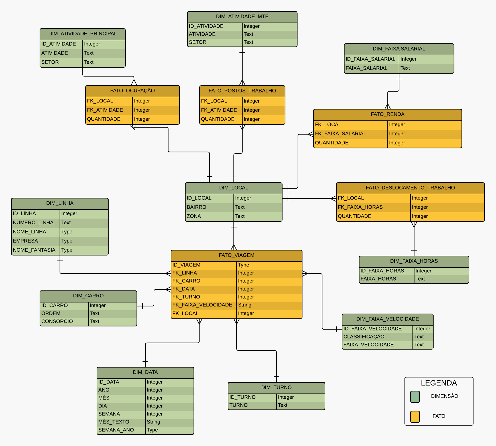

O Projeto
O transporte rodoviário está por vários anos como o principal meio de transporte dos cariocas. Nesse sentido justifica-se então a realização de estudos que consigam demonstrar as virtudes e deficiências do sistema, além de propor soluções para a melhoria da dinâmica do sistema de transporte. Esses estudos podem envolver não apenas a realização de análises presenciais dos ônibus, mas também o estudo baseado em dados obtidos pelas próprias empresas de transporte.
O Data Rio é um portal de dados abertos da Prefeitura do Rio de Janeiro criado para cumprir a lei de acesso à informação e também para incentivar desenvolvedores a elaborarem novas análises e ferramentas que utilizem esses dados para a melhoria da qualidade de vida dos moradores da cidade do Rio de Janeiro. O Data Rio disponibiliza, até o fechamento desse trabalho, mais de 1200 fontes de dados sobre, dentre outras categorias, saúde, educação, transporte e lazer na cidade.
A API do Data Rio só disponibiliza os dados da última coleta, não armazenando nem fornecendo dados históricos do GPS dos ônibus. Esses dados podem ser obtidos no formato JSON, CSV ou PDF. Auxiliou-nos na coleta da base histórica o repositório de dados do Laboratório de Engenharia de Software da Universidade Federal Fluminense.
O Instituto Brasileiro de Geografia e Estatística (IBGE) é um órgão federal responsável por prover dados e informações sobre o país com o objetivo de auxiliar políticas públicas e os mais variados setores da sociedade civil.
As informações disponibilizadas pelo IBGE incluem, por exemplo, taxa de alfabetização, taxa de escolaridade, renda familiar, número de deficiente físicos, área de trabalho, número de filhos, estado civil, tempo de deslocamento até o trabalho, informações de saneamento, dentre diversas outras informações. Esses dados são divulgados em uma série de planilhas no formato XLS e agrupados por unidade federativa, município e área de ponderação.
Criada no ano de 2004, a Pentaho Corporation desenvolveu o Pentaho Data Integration (PDI), também conhecido como Kettle, que é uma das mais populares ferramentas de código aberto capaz de fazer extração, transformação e carga de dados (ETL).
Google Cloud é uma plataforma de computação em nuvem desenvolvida pela Google que oferece o serviço de aluguel de servidores virtuais. Esses servidores tem configurações variáveis, dependendo da necessidade e do valor que cada cliente queira gastar com sua aplicação.
Apesar de ser um serviço que se baseia no aluguel de infraestrutura, seu custo total é considerado extremamente mais baixo que outras soluções, principalmente as soluções físicas que envolvam a aquisição de máquinas equivalentes as máquinas virtuais. Outra vantagem desses servidores em nuvem é a capacidade de escalonamento de performance, permitindo ao administrador do servidor uma modificação muito rápida das configurações da máquina em caso de sobredemanda ou evolução do sistema.